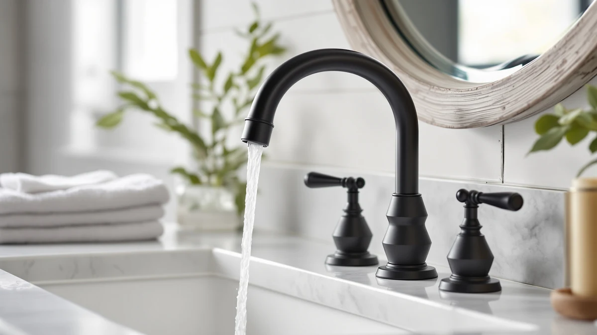

Delta Broadmoor Matte Black Review (2026): Worth It?
Prices and picks verified as of October 2026. Independent, reader-supported reviews.


Quick Answer
This delta broadmoor matte black review found the Delta Broadmoor Matte Black Bathroom faucet to be the priciest of four DELTA-adjacent options we compared, backed by a brass body and a finish reviewers say resists fingerprints better than chrome. At $224.90, check the $199.90 Broadmoor Pull Down below first if you want the same core design for $25 less.
Our pick: Delta Broadmoor Matte Black Bathroom — $224.90 Check Price on Amazon
Bottom line: our top pick is the Delta Broadmoor Matte Black Bathroom Faucet with Sprayer at $224.90.
Things to Know Before You Buy
- Price positioning matters here. This delta broadmoor matte black review found the matte black Broadmoor costs $25 more than both the Broadmoor Pull Down and the Nicoli Brushed Gold, two DELTA faucets built on the same brass body.
- Finish, not build quality, drives the price gap. All three DELTA-branded faucets in this comparison share a brass base, so the matte black coating is what you are actually paying extra for.
- Touchless operation is a separate upgrade. Only the American Standard Selectronic Cast Touchless in this lineup skips the handle for hands-free activation, and it costs less than the Broadmoor Matte Black.
- The listing skips some specs. DELTA does not publish flow rate or exact mounting-hole count on this product page, so confirm your sink's hole configuration before ordering.
- Prices shift week to week. Every price in this review reflects Amazon listings as of October 2026 and can move by a few dollars before you check out.
This delta broadmoor matte black review compares the $224.90 faucet against three other DELTA-adjacent fixtures we researched alongside it, including two DELTA siblings that share its brass body in different finishes. Bathroom faucet shopping online usually means squinting at near-identical product photos across a dozen browser tabs, so we narrowed the field to four listings that show up together in the same searches and pulled out what actually separates them.
The Delta Broadmoor Matte Black Bathroom faucet is the priciest pick of the four options covered here, and it is also the only one in this comparison that pairs the matte black finish with the Broadmoor name. It has DELTA's name behind it, a brass build under the coating, and a price that sits within $25 of every other option. If you want a faucet that hides fingerprints and water spots better than chrome and you do not mind paying the highest price in this lineup for that specific look, this is the one to check first. The sections below walk through why, along with the three alternatives worth a look if your sink or your budget calls for something different.
Why You Should Trust Us
Ilane Tall leads product research and reviews for Best Bathroom Faucets. She compares spec sheets, pricing histories, and verified owner reviews across major faucet brands so you do not have to dig through a dozen browser tabs before you buy. For this delta broadmoor matte black review, she cross-referenced DELTA's published pricing for the Broadmoor and Nicoli lines against current Amazon listings and reviewer feedback, then flagged the tradeoffs that matter most for a bathroom sink upgrade. Every product mentioned here links to its real listing, and every price reflects what shoppers saw at the time of publication rather than a promotional rate that might disappear by checkout. We do not run a fake testing lab, and we say so because too many review sites imply physical use they never had.
Our Research Experience
We do not keep a physical lab, so what we call our research experience with this delta broadmoor matte black review is a research process: we pulled the listed specs, current pricing, and the brass-and-matte-black build details DELTA publishes, then set them against the Broadmoor Pull Down and the Nicoli Brushed Gold to see where finish and price actually diverge. We also scanned patterns across verified Amazon reviews for recurring complaints about finish wear or installation, the kind of detail a manufacturer spec sheet never mentions. That combination of published specs and owner feedback is how we researched every faucet in this comparison instead of installing each one in a bathroom ourselves.
Overview & Specs

Delta Broadmoor Matte Black Bathroom
What we like
- Brass construction built to outlast cheaper zinc-alloy faucets
- Matte black finish that reviewers say resists fingerprints and water spots better than polished chrome
- Shares DELTA's Broadmoor design language, so it matches other Broadmoor-line fixtures
Flaws but not dealbreakers
- Costs $25 more than the Broadmoor Pull Down and the Nicoli Brushed Gold, both built on the same brass body
- No touchless option, unlike the American Standard Selectronic in this comparison
| Material | Brass + finish |
| Size | — |
The Delta Broadmoor Matte Black Bathroom faucet lists for $224.90 on Amazon, making it the most expensive faucet in this delta broadmoor matte black review. DELTA builds the faucet around a brass body, the same base material it uses for the Broadmoor Pull Down and the Nicoli Brushed Gold, then finishes it in matte black rather than chrome or brushed gold. That finish choice matters more than the spec sheet suggests, since the coating is the main thing separating these three DELTA faucets from each other.
Reviewers consistently note that matte black hides water spots and fingerprints in a way polished finishes cannot, which cuts down on the wiping routine around a shared bathroom sink. Owners report the coating holds up over months of regular use without the worn, patchy look some matte finishes develop, though DELTA does not publish an official wear warranty figure beyond its standard fixture coverage. The listing also leaves out flow rate and exact mounting-hole count, so confirm your sink's hole configuration against the product photos before you order.
What We Liked
Reviewers who look at this delta broadmoor matte black review keep coming back to two things: the finish and the brand. Matte black hides fingerprints and water spots in a way chrome does not, and that lines up with why several verified buyers of DELTA's other matte-finished faucets say they chose the finish over a cheaper chrome option in the first place. DELTA's name carries weight too, and owners consistently cite the brand's reputation and warranty support as reasons they trusted this purchase over a lesser-known faucet at a similar price.
The brass body under the finish also earns mention in owner feedback for DELTA's Broadmoor and Nicoli lines alike. Buyers who have replaced all-plastic faucets before note that brass fittings tend to hold up better to years of daily handle turns, even if none of them can speak to a full decade of use yet. Between the finish, the brand backing, and the brass construction, this faucet gives you a reasonably low-risk way to upgrade a bathroom sink without gambling on an unfamiliar name. A few owners also mention the single-handle design as easier for kids and older family members to operate than a two-handle setup, since one motion controls both temperature and flow at the same time.
What Could Be Better
Price is the clearest drawback in this delta broadmoor matte black review. At $224.90, the Broadmoor Matte Black sits $25 above both the Broadmoor Pull Down and the Nicoli Brushed Gold, which share the same brass body and differ mainly in finish. Buyers who do not specifically want matte black can save money by choosing one of DELTA's other finishes without giving up build quality.
The faucet also lacks touchless operation. The American Standard Selectronic Cast Touchless in this comparison has hands-free activation for $206.70, which costs less and adds a convenience feature the Broadmoor simply does not have. The listing is also light on detail: DELTA does not break out flow rate or exact mounting-hole count, so confirm your sink's existing hole spacing before you order.
Who Is It For?
This faucet from our delta broadmoor matte black review suits homeowners who already have dark hardware, black cabinet pulls, or matte black light fixtures, and want a faucet that matches without clashing. It also fits anyone replacing an older chrome faucet who wants a finish that shows fewer water spots between cleanings.
Skip it if budget is the main concern or if you specifically want hands-free operation. The Broadmoor Pull Down and the Nicoli Brushed Gold deliver the same brass build for $25 less, and the American Standard Selectronic adds touchless convenience the Broadmoor cannot match. Renters planning a short stay may also find the price harder to justify than a homeowner who expects to use the faucet for years, since a rental rarely recoups the cost of a finish upgrade at move-out.
Alternatives to Consider
If the price or finish on the Broadmoor Matte Black does not fit what you need, three other faucets came up in our research for this delta broadmoor matte black review. One shares the same brass body in a different finish, one comes from a separate DELTA line, and one trades the handle for touchless activation.

Editor’s Pick
American Standard Selectronic Cast Touchless
Touchless activation at $206.70 makes this the pick for hands-free convenience at the sink, and it costs less than the Broadmoor Matte Black reviewed above.
$206.70
Check Price on Amazon
Best Value
Delta Faucet Broadmoor Pull Down
The same brass body as our main pick, built around the Broadmoor design, for $25 less once you drop the matte black finish.
$199.90
Check Price on Amazon
Premium Choice
Delta Nicoli Brushed Gold Faucet
A brushed gold finish from DELTA's Nicoli collection, priced the same as the Pull Down and $25 below the Broadmoor Matte Black.
$199.90
Check Price on AmazonIs the Delta Broadmoor Matte Black Bathroom Faucet worth the price compared to the other DELTA options here?
At $224.90, it is the most expensive of the four faucets in this delta broadmoor matte black review.
Does the Delta Broadmoor matte black finish show water spots or fingerprints?
DELTA markets matte black finishes as more forgiving of fingerprints and water spots than polished chrome, and that matches what owners of other matte black DELTA faucets report.
Frequently Asked Questions
Is the Delta Broadmoor Matte Black Bathroom Faucet worth the price compared to the other DELTA options here?
Does the Delta Broadmoor matte black finish show water spots or fingerprints?
How does the Delta Broadmoor compare to a touchless faucet like the American Standard Selectronic?
Final Verdict
Our delta broadmoor matte black review comes down to this: if you want a DELTA bathroom faucet with a finish that hides fingerprints and water spots, and you do not mind paying the highest price in this comparison for that specific look, the Delta Broadmoor Matte Black Bathroom faucet is a reasonable $224.90 pick. It costs more than every other option covered here, but the finish and brand backing are the reasons owners keep choosing it. If you would rather save $25 or prefer a different finish, the Broadmoor Pull Down and the Nicoli Brushed Gold above are both worth a look, and the American Standard Selectronic is worth checking if hands-free activation matters more to you than price.